El kit
Todo lo que hay en la caja
Antes de empezar, conviene saber qué hay en la caja y cuántas piezas de cada tipo. Así sabrás si falta algo y te costará menos encontrar cada pieza cuando montes.
La electrónica
La bandeja azul guarda la placa, los sensores, los motores y los cables. Cada pieza tiene su hueco.
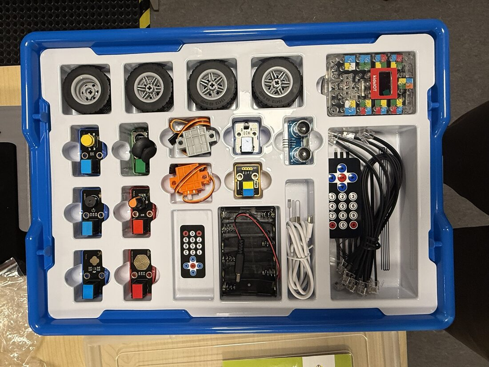
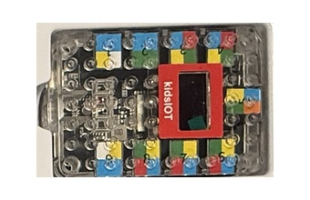
× 1Placa kidsIOT
El cerebro.
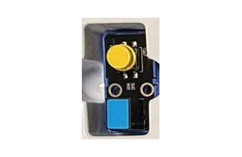
× 1Botón
Puerto azul.
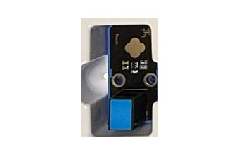
× 1Sensor táctil
Puerto azul.
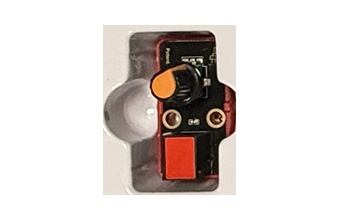
× 1Potenciómetro
Puerto rojo.
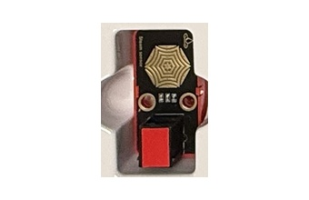
× 1Sensor de vapor
Puerto rojo.
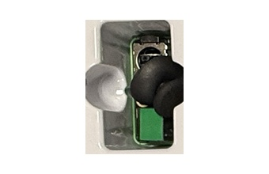
× 1Joystick
Puerto verde.
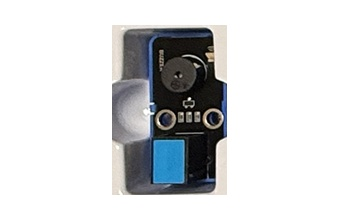
× 1Zumbador
Puerto azul.
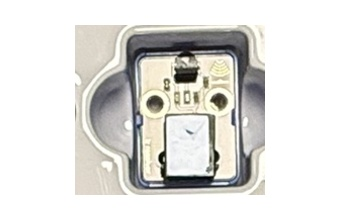
× 1Receptor de infrarrojos
Puerto azul.
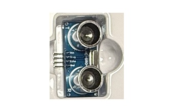
× 1Sensor de ultrasonidos
Se pincha en su adaptador.
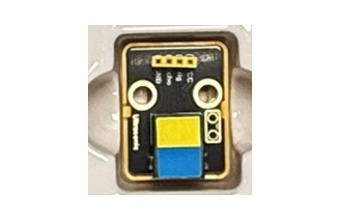
× 1Adaptador del ultrasonidos
Puerto 9.
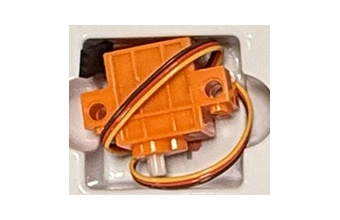
× 1Servo de 360° (naranja)
Gira sin parar.
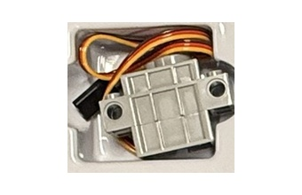
× 1Servo de 270° (gris)
Va a una posición.
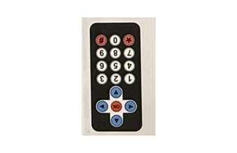
× 2Mando a distancia
En la caja vienen dos modelos.
Cables y alimentación
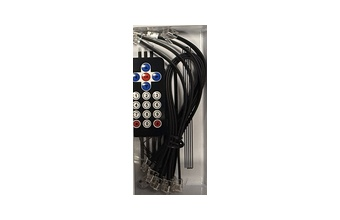
× 7Cables tipo teléfono
4 cortos (20 cm) y 3 largos (30 cm).
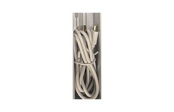
× 1Cable USB-C
Programa y da energía.
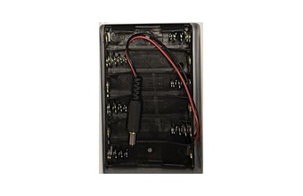
× 1Portapilas
6 pilas AA (no incluidas).
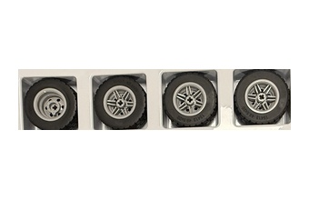
× 4Ruedas
Las piezas de construcción
Son piezas compatibles con LEGO Technic. Aquí están todas extendidas sobre la mesa:
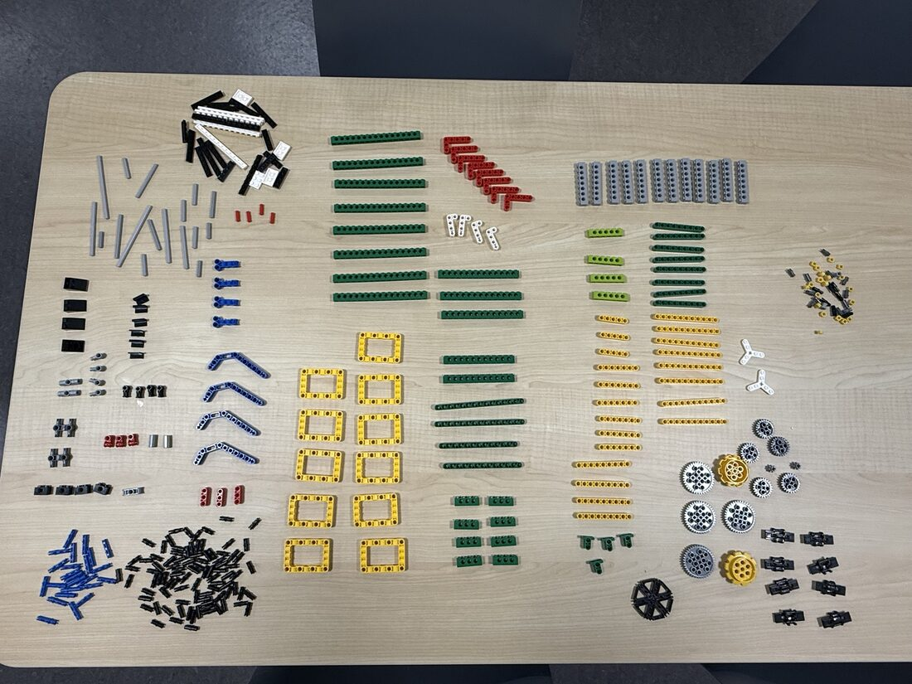
 ¿Cómo se mide una viga?
¿Cómo se mide una viga?
Vigas gruesas
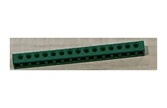
× 8Viga gruesa verde de 16
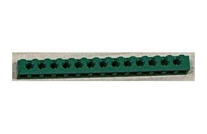
× 3Viga gruesa verde de 12
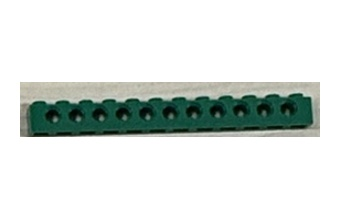
× 2Viga gruesa verde de 10
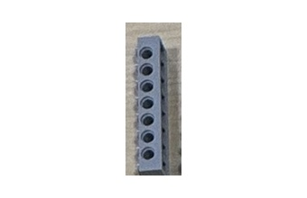
× 12Viga gruesa gris de 8
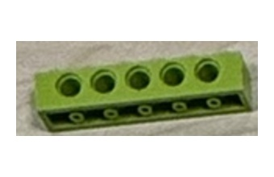
× 4Viga gruesa verde lima de 6
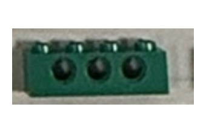
× 8Viga gruesa verde de 4
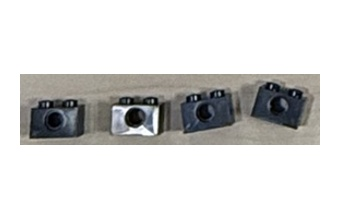
× 4Ladrillo de 1 con agujero
Vigas finas, en L y marcos
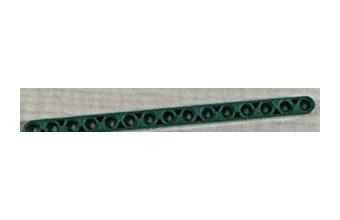
× 4Viga fina verde de 13
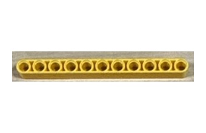
× 12Viga fina amarilla larga (11-13)
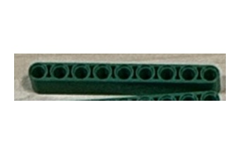
× 9Viga fina verde de 9
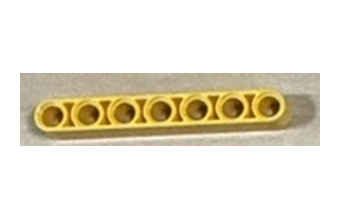
× 6Viga fina amarilla de 7
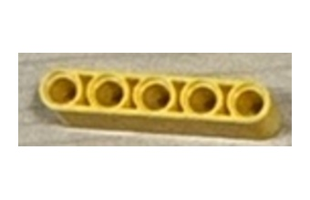
× 3Viga fina amarilla de 5
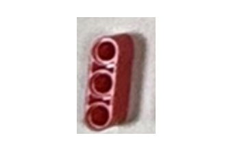
× 3Viga fina roja de 3
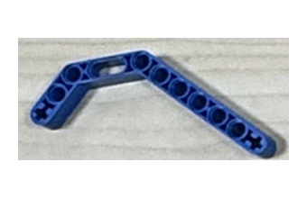
× 4Viga doblada azul
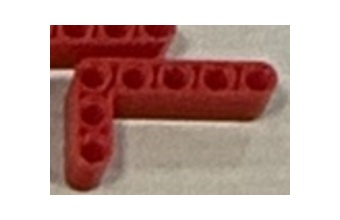
× 9Viga en L roja
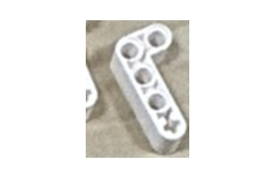
× 4Viga en L blanca
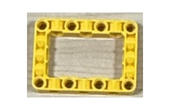
× 11Marco amarillo
Ejes, pasadores y conectores
Los ejes tienen forma de cruz y hacen girar las cosas. Los pasadores unen dos piezas por sus agujeros.
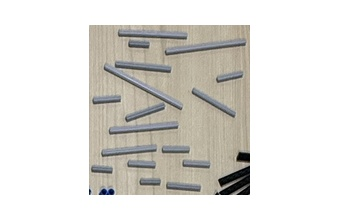
× 17Ejes grises de varios largos
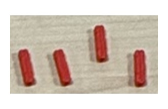
× 4Ejes rojos cortos
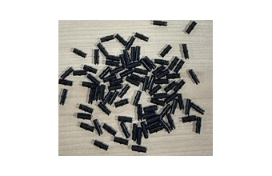
≈120Pasadores negros
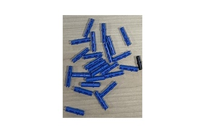
≈40Pasadores azules largos
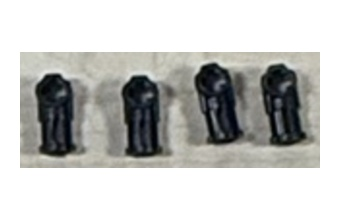
× 4Pasadores negros con tope
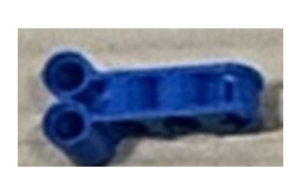
× 4Conector azul eje-pasador
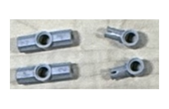
× 6Conectores gris claro
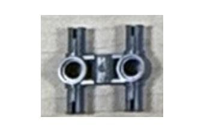
× 2Conector en H
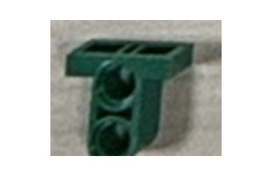
× 4Conector en T verde
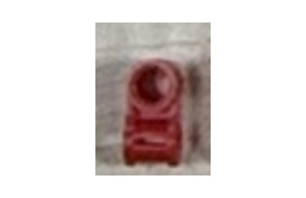
× 3Conector rojo
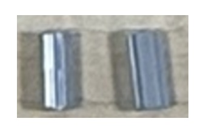
× 2Casquillos grises
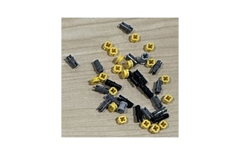
≈30Casquillos y piezas pequeñas
Engranajes y piezas que giran
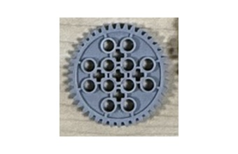
× 4Engranaje grande (40 dientes)
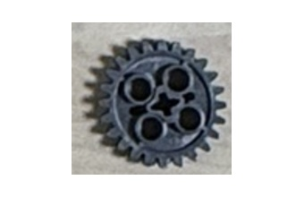
× 5Engranaje mediano (24 dientes)
Engranaje pequeño (8 dientes)
Rueda dentada amarilla
Rueda negra de radios
Eslabón negro
Hélice blanca
Otras piezas
Placas negras y blancas
Teja negra
Pieza negra pequeña
Placa gris con agujero
Ponte a prueba: el inventario
- Extiende las piezas de tu caja sobre la mesa y sepáralas por grupos, como en la foto.
- Cuenta cada grupo y compáralo con esta página. ¿Te falta alguna pieza?
- Busca la viga más larga y la más corta. ¿Cuántos agujeros tiene cada una?
 Para el docente
Para el docente
- Las cantidades se han contado a partir de fotos de un kit. Las marcadas con ≈ son aproximadas (piezas pequeñas amontonadas). Conviene revisarlas con la lista de piezas que viene en la caja.
- Los nombres de las piezas son descriptivos para el alumnado; en los manuales pueden aparecer con otros nombres (por ejemplo, «liftarm» para las vigas finas).
- Un organizador con compartimentos para pasadores, ejes y engranajes ahorra mucho tiempo en cada sesión.